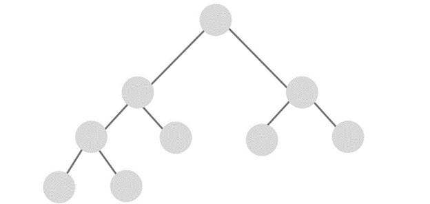

Una estructura de datos no lineal, o también conocidas como mutienlzadas, son aquellas en la que cada elemento o dato puede estar enlazado a cualquier otro componente, esto explicado de otra forma s que un dato o elemento puede tener varios sucesores o varios predecesores.
Algunas de estas estructuras de datos son:
Para comenzar se comenzará por definir que es un grafo, por lo cual para este hay varias definiciones una de estas es que es una estructura matemática formada por un conjunto de puntos y por un conjunto de lineales, las cuales están unidas de un punto a otro, en este caso los puntos se llaman nodos o vértices del grafo y las líneas se les llaman aristas o arcos.
Teoría de grafos.
Esta busca representar de forma visual los conjuntos de datos abstractos en formas de nodos o vértices y las relaciones que pueden tener con otros nodos a través de las aristas, Gracias a la representación y a este método se a podido lograr mejores avances a la hora de organizar grandes volúmenes de información.
Grafos en programación.
Es un tipo de datos abstracto (TAD), que consiste en un conjunto de nodos a los cuales se les llama vértices y un conjunto de arcos que también se les puede llamar aristas, estos pueden establecer relaciones entre los nodos, cabe destacar el concepto TAD desciende directamente del concepto matemático grafo.
Aplicaciones de los grafos.
Los grafos son usados en muchos ámbitos y son de las estructuras mas importantes sin embargo una de sus aplicaciones son en las aplicaciones de mapas, matemáticas o para indicar una ruta que se debe seguir para poder llegar a su destino.
Un ejemplo de grafo dirigido es que solo se puede recorrer en un único sentido y tiene otra forma de conectarse con otros nodos eso es lo que significa grafo dirigido.
Ejemplo:
Se define como una estructura de datos no lineales y dinámicas, puesto que puede cambiar tanto de forma como de tamaño durante la ejecución del programa, esta es una de las estructuras mas importantes en el área de la computación.
Mas adelante se explicará más que es un árbol y los tipos que hay de estos mismos.
Ejemplo:

Bootstrap v5.1.3